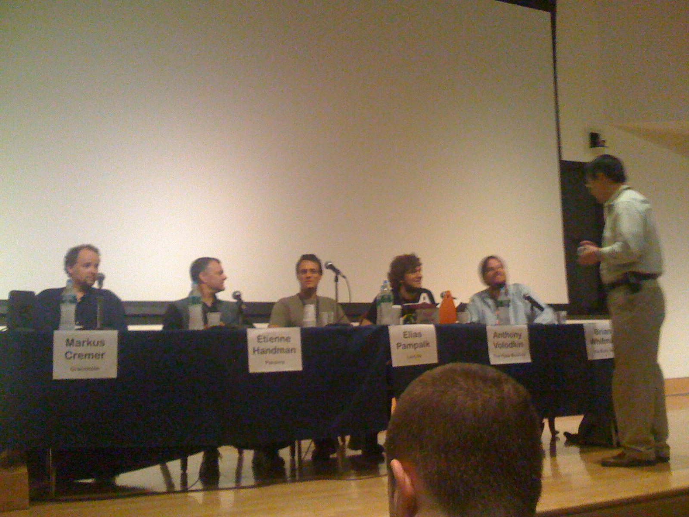

ISMIR Day 2 - the music recommendation panel
Commercial Music Discovery and Recommendation
Moderator: Youngmoo
Panelists:
- Markus Cremer - Gracenote
- Etienne Handman - Pandora
- Elias Pampalk - Last.fm
- Anthony Volodkin - The Hype Machine
- Brian Whitman - Echonest
Markus gave a history of Gracenote - starting with CDDB. There drive to go commercial stemmed from the need to clean up all the noisy, messy data. Next Markus showed the 'Gracenote solution' slide that highlights the various Gracenote products. Markus finally got to the recommendation at the end of his time -
Etienne - describes the music genome project - classification leading to
recommendation. They use mostly human analysis but do use a little
computer analysis (note to self, ask Etienne what they do) 1,0000
genes, 200 or 300 apply to a given piece, 15,000 new analysis, "we use
people". Originally a b2b play - but now focus on the radio experience -
(which is different from recommendation) - serendipity. They are proud
of the playlisting - listener feedback is very important (over a
billion are used to assist in playlisting). Etienne also ran out of
time before he could finish his pitch.
Elias introduced last.fm - with a succinct description of last.fm. Human-to-human recommendation is very important. Lean forward and lean back modes. Next (update) 5 years: 200 million tracks. subgenres will grow much faster. More data will lead to better recommendations, better response to new trends etc. Data Portability, artists will embrace recommendations (watch out for shilling). Elias finished his presentation time to spare.
Anthony - gives an overview of hype machine. 1.2 million unique visitors (40% us, 12% uk, 6% germany). Why do so many people like HM? Scratching Anthony's personal itch - find new music - he wanted find music that real people were excited about. Didn't like marketing - but liked blogs - blogs are "the excitement filter" - this is the discovery experience - the music that people on the web are excited about. What's next? - Similar / related music recommendations will become a commodity (good point, this is already happy) - it is all going to be about user experience (UI and context will differentiate). Transparency is important. Interfaces are important. Points to thesixtyone.com as an example of how to make music fun. A great 4 minute intro (he's a pro!)
Brian talks about the EchoNest - the goal is to sell MIR to people - they have built lots of tech that they use people for free. Everything should be done by machines, no editors, no filters. They've made all of their data available via their web services. They really want people in the world to use their services. Points to MoreCowbell.dj a fun app. Another demo - they've added a recommender to iMeem.
Discussion section - a wide ranging discussion about music recommendations. Some notes: Why is music recommendation different from other types? - Very personal nature, music is always related to some other context. What is the role of expert?
Questions from the audience
Recommendations vs. Search - search engine-based recommenders seem to be growing fast - and they are not using a recommender Markus - when apple launched genius Gracenotes traffic increased by 10 (Apple uses Gracenote's fingerprinting technology). Hacking> - Elias talks about how Last.fm deals with hacking. Etienne echos the point. Group Recommenders, Business Models, Discovery vs. Recommendation, Trust, shilling.It was a good panel.

> 10000 genes
I think Etienne said it's about 1000?
> "Next year:"
I guess I didn't go a good job in making clear that I was talking about the next 5 years :-/
Posted by Elias on September 16, 2008 at 03:34 PM EDT #